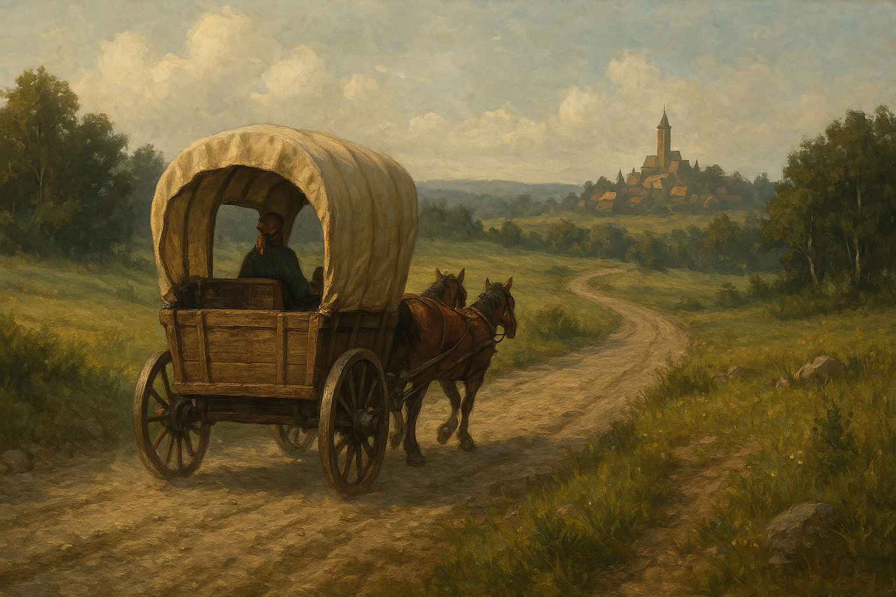

Chapter 3: The Gathering
Gathering of the Chosen

Gathering of the Chosen
15049.03.21
一早，冒險者們便被爵士宅邸客房內的魔法廣播系統喚醒，請大家移動到宴會廳，參與年度集會。冒險者們在各自的座位上簡單用了早點，集會便開始了。
一開始，諾曼爵士先再次介紹了組織的編制，包含各大階級，以及高層及人士分別的個人護衛（同時也提醒大家在集會中禁止使用暴力）。然後他便和大家簡單報告了本年度 T.I.D.E.S. 組織的變動狀況，包涵 Ishton Weiss 的逝世，組織高層決議讓 Keith Young 升上 The Gifted 的階級。
接著，進到了挑戰 The Obelisk 階級的環節。The Gifted 中，一位名為 Laura Fishburne 的女子站了起來，表示他要向 Riley 女士進行挑戰。在 Riley 點頭接受了 Laura 使用魔法的請求後，Laura 便伸出他的手，指尖冒出了一股異樣的氣。冒險者們盯著 Riley 看，發現他的右眼開始滲血，接著，他的右眼珠便被用力地騰空挖出，直接掉到 Riley 正前方的地板上。Laura 向諾曼爵士表示，Riley 的右眼便是他的信物，而 Riley 一手捂著空洞的眼窩，一邊默默的點著頭。
諾曼爵士宣告，自此開始，Riley 便不再是 The Obelisk 的成員，更不是 T.I.D.E.S. 的一員了，同時也請 Riley 步出會場。看著 Laura 慢慢地走上舞台，坐上原本屬於 Riley 的座椅，冒險者們心中除了詫異外，更有著惋惜與氣憤。不過，在諾曼爵士宣布，被 Riley 邀請的他們也必須離場時，他們也沒有別的話能說了。集會則繼續進行著，但這已經與冒險者們沒有關係了。
走出爵士的宅邸，僕人引導 Riley 走向其中一輛馬車，表示這是諾曼爵士賜予 Riley 的最後一份禮物，讓 Riley 和冒險者們登上馬車。Riley 駕起馬車，準備出發。在冒險者們的詢問下，Riley 也和他們說明，他預計帶他們到一個名為「土城（Mudtown）」的地方，他在那裡還有屬於自己的一些資源可以使用。不過對阿龍而言，更重要的是，土城，是他的家鄉。